AI-агент для инвестиций
прототип · реальные данные
Мани читает
новости
за вас
Раскрытие эмитента → понятный вывод, проверенные цифры и честная уверенность. Решение — за вами.
Попробовать↓Выберите новость. Мани объяснит.
Настоящие раскрытия из отчёта скоринга
Проверили вслепую.
Разборы из отчётагде Мани прав — и где ошибся
Семь шагов от текста до вывода.
Итог считает формула, а не языковая модель. Каждое число — из сообщения или помечено как вычисленное.
Место в Honey Money
Часть системы Honey Money
ML-сигналы
Новости
Bull ⇄ Bear
Риск-гейт
Вы